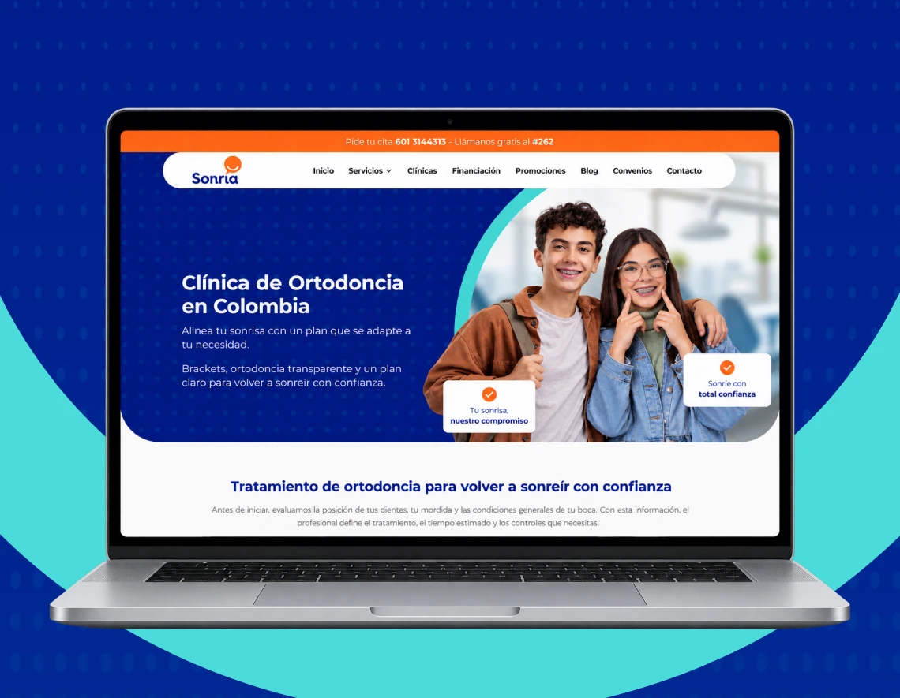
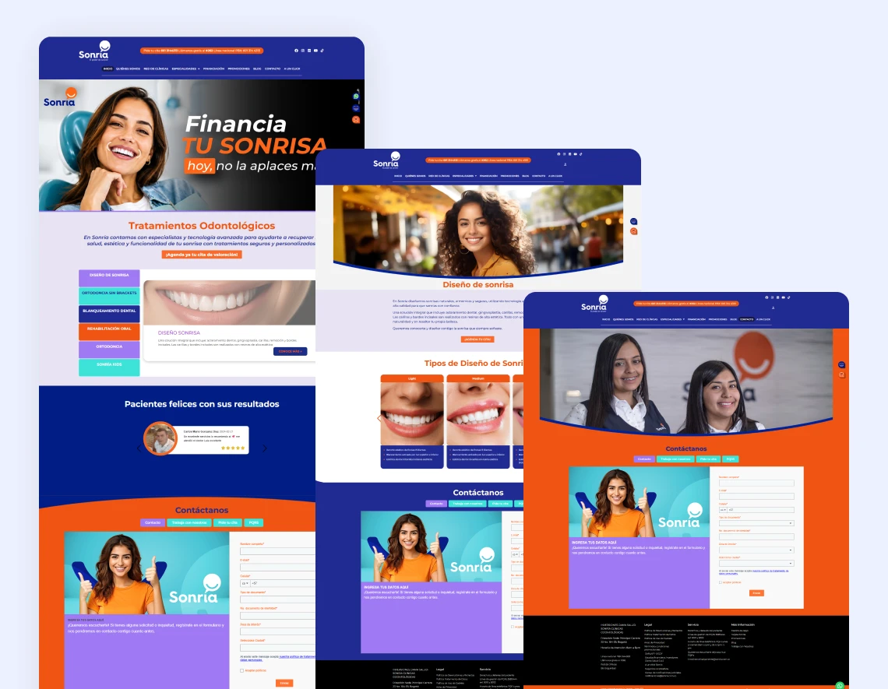
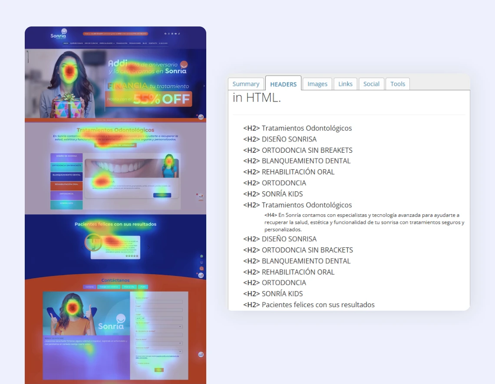
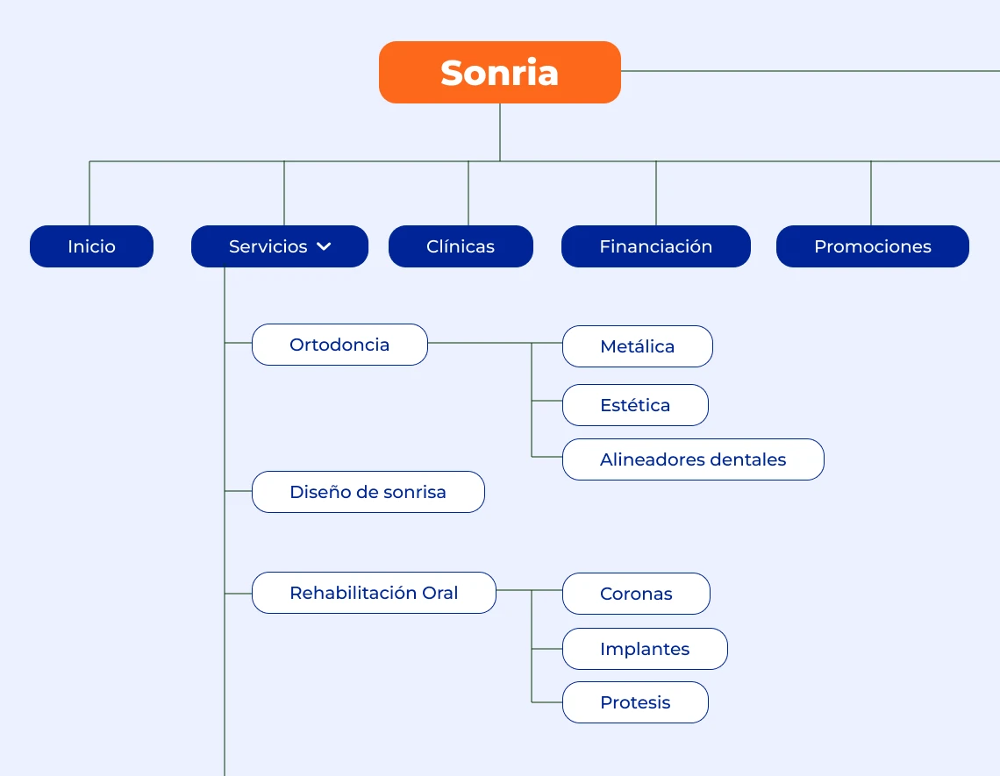
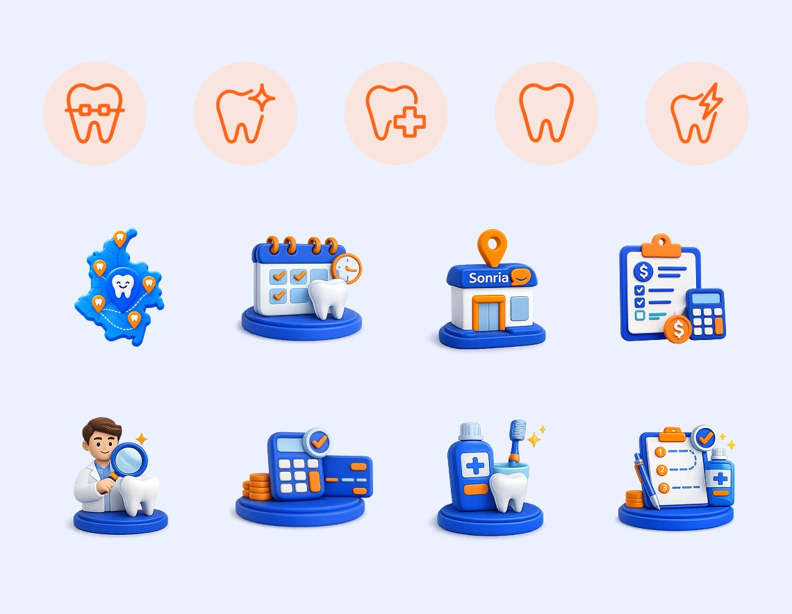
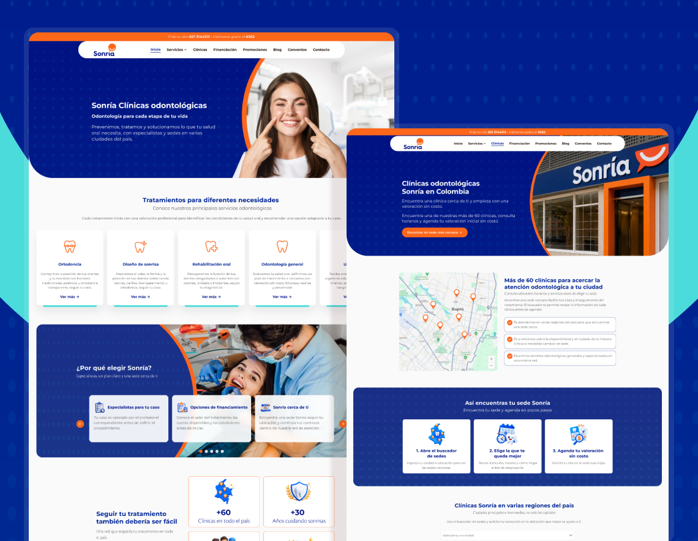
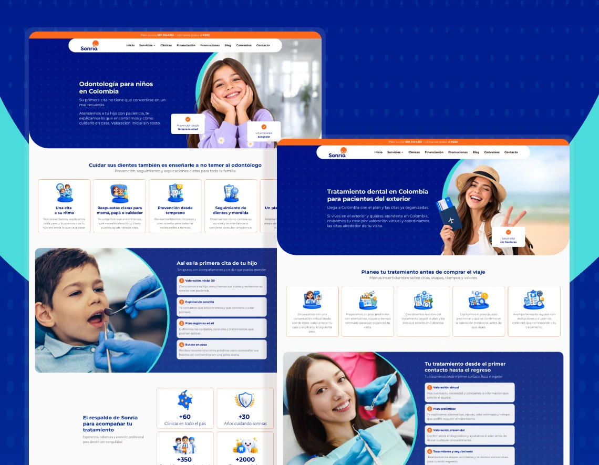

Rediseño UX/UI del sitio web de Sonría

Acerca del proyecto
Rediseño integral del sitio web de la red odontológica líder en Colombia, pensado para modernizar la marca y convertir más visitas en citas.
• Cliente: Sonría, red odontológica líder en Colombia
• Rol: Diseñador UX/UI · Dirección visual y sistema de diseño
• Equipo: Diseñador UX/UI (yo), Especialista en Auditoría/UX, Redactor SEO, Equipo de Estrategia Digital
• Reto: Un sitio desactualizado, con fricción en el agendamiento de citas y una arquitectura que dificultaba encontrar tratamientos.
• Decisión clave: Reemplazar páginas genéricas por landings especializadas por tratamiento, alineadas con lo que busca cada paciente.
• Entregable: Diseño del sitio web completo, desde el home hasta las landings de cada tratamiento, con su sistema de diseño en Figma.
Paso 1: El desafío y diagnóstico inicial
El sitio web anterior presentaba una interfaz desactualizada que no reflejaba el liderazgo ni la calidad médica de la marca. Existían fricciones críticas en los flujos de agendamiento de citas y la arquitectura de contenidos era rígida, lo que dificultaba que los usuarios encontraran servicios específicos y afectaba el posicionamiento orgánico en motores de búsqueda.

Paso 2: Investigación y auditoría UX en equipo
Para fundamentar las decisiones de diseño en datos reales, trabajé en conjunto con el equipo estratégico en una fase de auditoría técnica y comportamental:
• Mapas de Calor (Hotjar): Analizamos las zonas de mayor interacción y detectamos puntos de fuga donde los usuarios abandonaban la navegación antes de completar la solicitud de cita.
• Mapeo de Rutas de Usuario: Evaluamos el flujo de conversión para simplificar los pasos entre la exploración de un servicio y la acción de contacto/agendamiento.
• Auditoría de Usabilidad y SEO: Identificamos oportunidades de mejora en legibilidad, jerarquía tipográfica, contraste y arquitectura de URLs.

Paso 3: Arquitectura de información
Junto con el redactor SEO y el equipo digital, reestructuramos la oferta de servicios. En lugar de agrupar tratamientos en páginas genéricas, diseñamos landing pages especializadas para búsquedas con intenciones específicas (por ejemplo, diferenciando Ortodoncia Metálica de Ortodoncia Estética).
Esta estrategia está diseñada para responder con precisión a la intención de búsqueda de cada paciente, reducir la tasa de rebote y facilitar la conversión a través de flujos claros y jerarquizados.

Paso 4: Dirección visual e iconografía con IA
En un sector donde predominan los iconos genéricos y una estética clínica fría, Sonría necesitaba un lenguaje visual propio. Para lograrlo, usé IA como herramienta de producción y generé dos librerías de recursos gráficos adaptadas a su identidad:
• Librería de Iconos en Contorno: Diseñada para la navegación clara en menús, footers y tarjetas de servicios, priorizando la usabilidad y la legibilidad.
• Librería de Iconos 3D Custom: Desarrollada para alinearse con el manual de marca de Sonría, aportando un estilo visual moderno, distintivo y prémium que eleva la percepción de la marca frente a la competencia.

Paso 5: La solución UI final
El resultado es el diseño del sitio web completo, estructurado para dar confianza al paciente y facilitar la conversión en cada punto de contacto:
• Home y propuesta de valor: El mensaje "Odontología para cada etapa de tu vida" con agendamiento directo desde la primera pantalla y acceso rápido a las especialidades (Ortodoncia, Diseño de Sonrisa, Rehabilitación Oral, Odontología General y Urgencias).
• Confianza para decidir: Métricas de respaldo (+60 clínicas, +30 años de trayectoria, +350 especialistas y +2000 clientes satisfechos), testimonios de pacientes y preguntas frecuentes sobre tratamientos y financiación.
• Financiación transparente: Cuotas mensuales estimadas por tratamiento para reducir la barrera económica desde el primer momento.
• Landings por tratamiento: Cada página incluye beneficios, tecnologías, casos de éxito y formulario de agendamiento.
• Mobile-first y sistema de diseño: Componentes y tokens en Figma con Auto Layout que se adaptan a cualquier pantalla y facilitan la implementación.


Impacto: una plataforma a la altura del líder
Sonría pasó de tener un sitio que frenaba su crecimiento a una plataforma digital coherente con su posición como líder del sector. Más que una renovación visual, el proyecto dejó una base estratégica para la captación de pacientes:
• Del tráfico a la cita, sin fugas: Cada tratamiento tiene su propia landing, alineada con lo que el paciente busca en Google, y lo lleva directo al agendamiento. Así se atacan los puntos de abandono que detectamos en la auditoría.
• Escalar sin rediseñar: Con el sistema de diseño, Sonría puede lanzar nuevos tratamientos, sedes o campañas reutilizando componentes, sin empezar un proyecto de diseño desde cero.
• Una marca que se diferencia en salud: La dirección visual y la iconografía propia sacan a Sonría de la estética clínica genérica del sector y refuerzan su percepción prémium.
Trabajo realizado para AMD Agencia de Marketing Digital